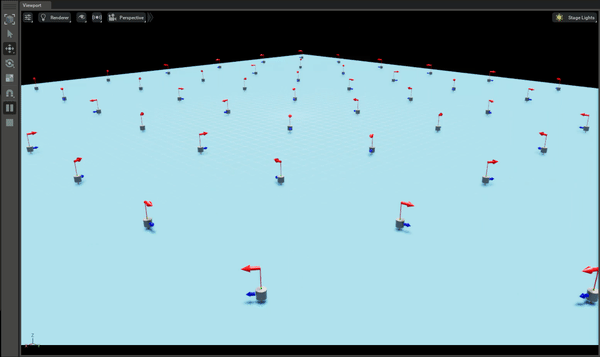
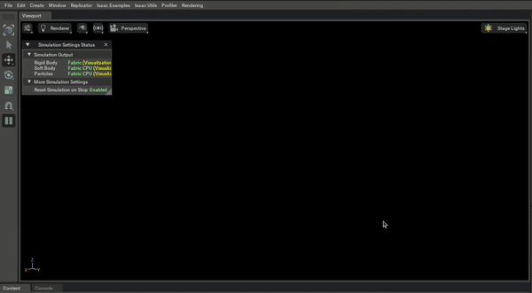
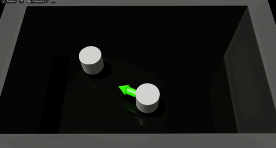
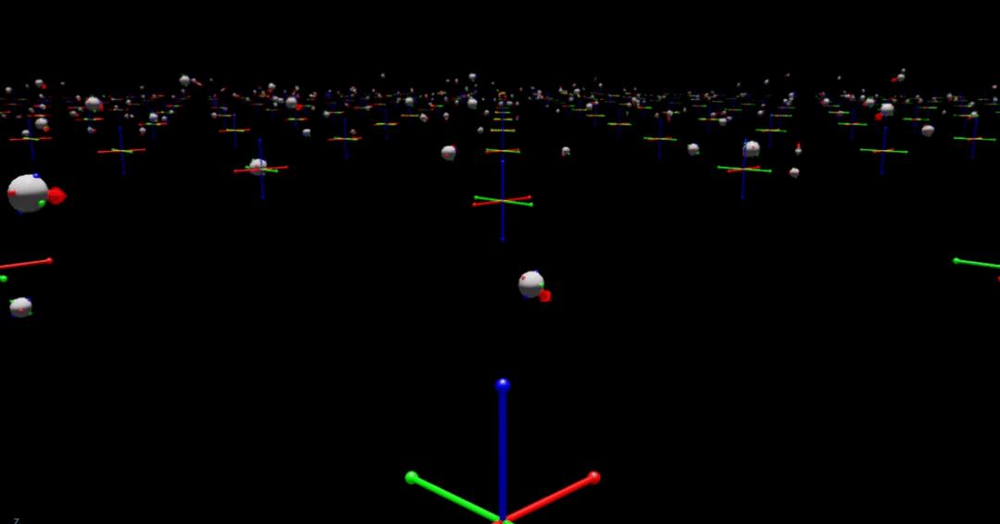
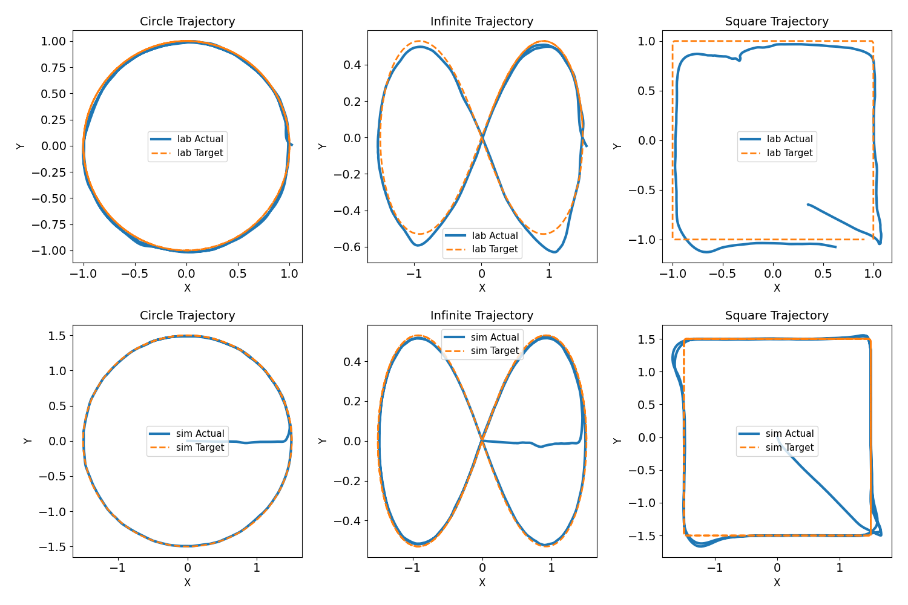

Key Results
Simulation Performance
Simulation performed using Omniverse Isaac Sim, showcasing the platform's ability to quickly (a model is trained in parallel across multiple environments) and converges in less than 10 minutes.





Real Laboratory Validation
Direct transfer of simulation-trained policies to the physical floating platform demonstrates successful sim-to-real capabilities. The system maintains stable control despite real-world uncertainties including air currents, sensor noise, and mechanical variations.



Performance Highlights
±2.5cm
Position Accuracy
±1.2°
Orientation Precision
5Hz
Control Frequency
95%
Success Rate